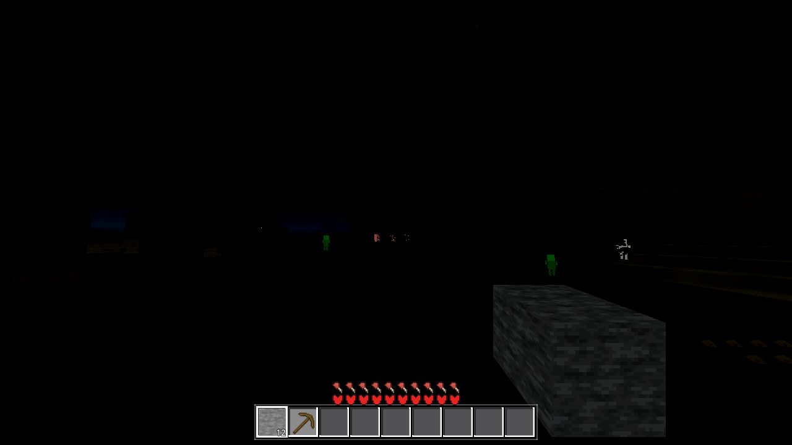
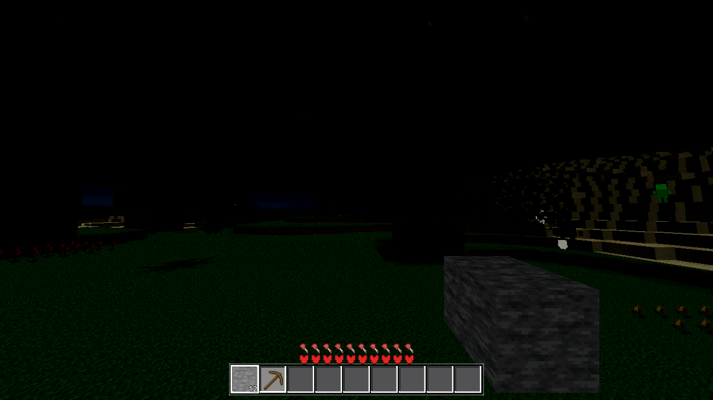
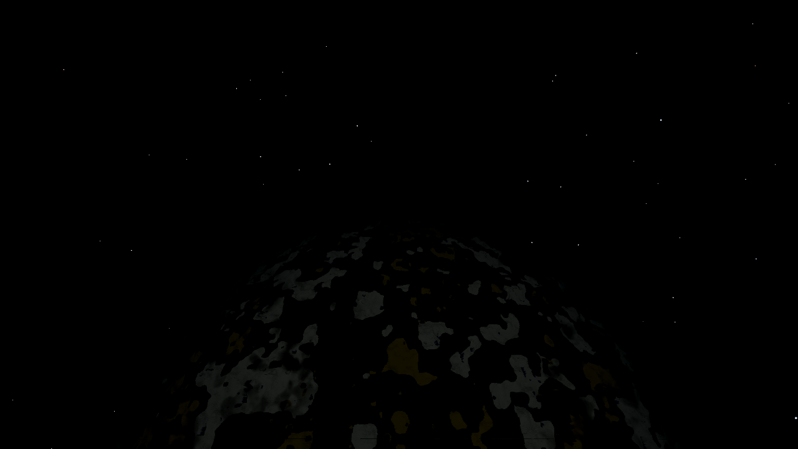
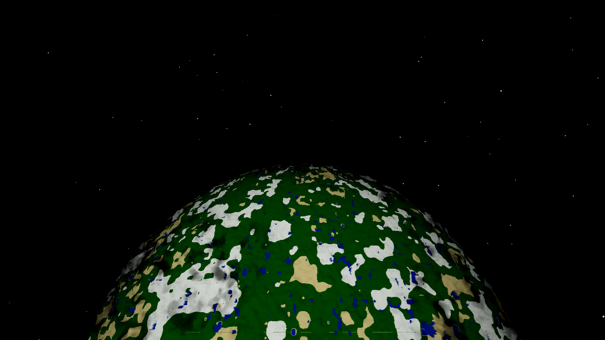
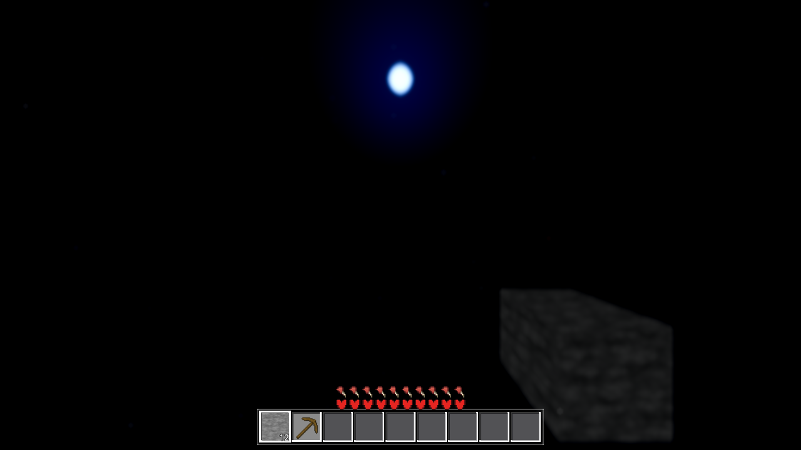
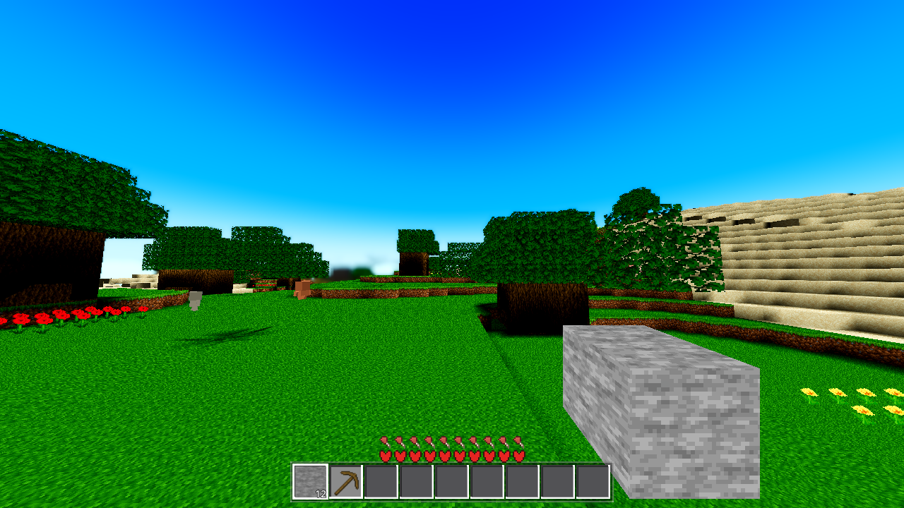

VERDICT: PASS — night now reads as a world (ground, orbit, sky, stars), the day is bit-identical to the assessment frames (0.00/255 shift against the >2/255 flatten gate), the switch-OFF state is pixel-identical to the pre-AC-0436 defect, and every light gate is green. The moon is shown, and shown lighting things.
| Named cause | Verdict | Evidence |
|---|---|---|
| (1) The ~0.18 light floor "dies in the tone mapping at eight bits" | CONFIRMED | Pipeline math on the shipped tonemapper (linear → ×0.85 exposure → ACES
(x(2.51x+0.03))/(x(2.43x+0.59)+0.14) → contrast 1.1 → sRGB → 8-bit): the contrast step
creates a hard dead zone below ~L 0.28 for the atlas greens. The 0.20 night floor therefore outputs
0/255 literally, not approximately — measured on the before frame: near-ground luma
4.01 with 90.7% of pixels <20. (Refinement of the ticket's wording: it is crushed by the ACES toe
+ the 1.1 contrast adjustment, with 8-bit quantization the last step, not a mysterious "death at
eight bits".) |
| (2) "There is no moon at all, so nothing lights the night side" | CONFIRMED | Code: exactly one DirectionalLight3D exists (the sun,
main.gd:69 — 0.1 energy, pointing below the horizon at night). Every chunk
sky-light term is ×u_day = 0.0 at night. The satellite body's night is a flat 0.18 floor with
no directional source. The "moon" in the sky pass was a body-flip disc at amount 0.3 — a ~6-px grey
dot that nothing answered to. No moon light source exists anywhere. |
Direction-to-moon = DayNight.sun_direction(t) itself (the sun sits at −sun_direction, so
the antipode sits at +sun_direction — whose y is positive exactly when the sun is below the
horizon). Intensity: DayNight.MOON_L := 0.25 — one home in
core/daynight.gd; every consumer reads it, none restate it. Night weight =
(1 − day(t)) × switch. Switch: Settings moonlight, default ON (the shipped
night is the filed defect — the ambient_sky/cloud_gate/viewmodel_occlude re-ruling), with
AWECRAFT_MOON=0|1 env preload (world.gd, written without save), an Options row, and
sanitize_bool. Contract: at day or OFF every added term is exactly 0.0 —
0.0·x=0.0, x+0.0=x, mix(x,y,0)=x in IEEE 754 → the pre-AC-0436 paths
bit-identical by construction, proven by measurement (§4).
| Component | Files | Effect at night |
|---|---|---|
| Chunk terrain (4 unshaded shaders) | chunk_lit_{opaque,cutout,flower,fluid}.gdshader |
L += u_moon · max(dot(NORMAL, u_moon_dir), 0) — a per-fragment lambert off the mesh
face normals (the mesher emits ARRAY_NORMAL). The night landscape's slopes; the 0.20 floor never
re-tuned, the moon adds to it. Top faces lit, sides dark — a moonlit terrain, not a lift. |
| Satellite body (the orbit planet) | satellite_body.gdshader + the per-frame push in satellite_body.gd |
The night factor gains u_moon · moon_l (the radial L_RADIAL convention — the moonlit
hemisphere). Pushed with BODY_MOON_SCALE := 8.0 — the body is a lit material: engine
ambient (~0.20 at night) × its 0.18 shader floor × the baked-dark night-side texels is a triple
product the unshaded chunks don't have; MOON_L alone leaves the hemisphere sub-threshold (pipeline
math: ~1/255). |
| Clouds (volumetric + deck) | cloud_layer.gdshader |
The light march re-aims: Ldir = mix(u_sun, u_moon_dir, u_moon_w) — self-shadow, the
HG phase and the forward-scatter glow follow the moon (moonlit tops, silver lining); the day factor
lifts u_day + u_moon; the deck path gains the same lambert as its sun term. |
| Sky disc (the moon, shown) | aero_sky_gradient.gdshader (flag pushed from world.gd _ac0401_push, the
established look-switch seam; aero.gd untouched) |
The night disc's u_moon flag: a wider full-brightness window + full core — the ~6-px
dim dot becomes a full moon (ground-up frame, §4). Switch-gated so OFF restores the exact old dot;
the sun path uses the exact original constants. The halo stays at amount 0.3 (deviation, §3). |
| Star field (the density fix) | star.gdshader |
u_star_lift (0/1 switch): the 500-star shell is a mesh fact (main.gd — fenced), so
density comes from the vertex-stage size lift mix(UV2.x, 0.5+0.9·UV2.x, u_star_lift) —
most quads ~1.2 px sub-pixel → ~1.9 px. Brightness untouched. |
| Switch plumbing | settings.gd (DEFAULTS + sanitize), menu.gd (Options row
"Sky: moonlight at night"), world.gd (env preload + the value-gated chunk/cloud/sky/star
pushes in block 6 of _ac0401_push) |
Live toggle with no apply step; change-gated pushes (the chunk gates also key on the material-set size — the AC-0420 lazy-material pattern). |
| Docs (invariant 2, same task) | ARCHITECTURE.md — the §3 AC-0436 bullet + the §2 Settings clause |
The convention, the one-home, the consumer set, the switch, the evidence pointer. |
unshaded — they never see engine lights — and a light node would
double-light the LIT satellite body (engine ambient × its u_day re-weight), which
would have shown up in the 2600 orbit acceptance frame. The moon IS the shader terms (that is the
"show what it lights"); lit materials (mobs, viewmodel, drops) keep the existing 0.25 ambient at
night — they were never the reported defect.mix(sun_amount, 1.0, u_moon)) carries the look instead.| Measure | Before (the filed defect) | After (this fix) | Day guard |
|---|---|---|---|
| Night ground, near-ground band (y440–600) avg luma | 4.01 (90.7% of px <20) | 13.17 (86.9% <20; green 4.0 → 16.5) | day ground 98.41 → 98.41 — 0.00 shift, bit-identical (gate >2/255) |
| Night ground, reads as terrain? | near-black void (the filed defect) | yes — the stepped bank, trees, stone block, mobs, flowers; directional top-lit / side-dark slopes | |
| Night orbit planet (2600) avg luma | 3.04 (92.7% <20, 0% >80) | 46.71 (43.2% <20, 19.6% >80) — reads as a world: green terrain, tan patches, white clouds, blue water, the dark anti-moon limb | day orbit 139.58 → 139.58 — bit-identical (the assessment reference exactly) |
| Stars (luma-40 components, sky region) | 233 (ground sky) / 68 (orbit top-sky) | 441 (ground sky, 1.9×) / 103 (orbit top-sky); the day orbit space shows 4240 components | — |
| Interface no longer the brightest object | HUD the standout (scene at 4.0/255) | the red stat row (~89) is far below the scene content in every frame (terrain up to ~100; stars 198.8 ground / 255 orbit; the moon disc ~255 ground-up) | — |
| The moon, shown | a ~6-px grey dot (amount 0.3) | full moon — wider window + full core + pale-blue halo, 68° elevation in the ground-up frame | — |
| Switch OFF (AWECRAFT_MOON=0) | — | pixel-identical to the pre-AC-0436 before frame (57,600-px sample, 0 differing pixels; PNGs equal to the byte) | — |
 BEFORE night ground (luma 4.01 — the filed void) |
 AFTER night ground (luma 13.17 — terrain, slopes, mobs, stars) |
 BEFORE night orbit (planet luma 3.04 — the faint mottle) |
 AFTER night orbit (planet luma 46.71 — a world, with its dark limb) |
 THE MOON, SHOWN — ground-up night (the r24 pitch-1.3 recipe): full disc + halo at 68° elevation, and below it, the terrain it lights |
 DAY ground (98.41 — the assessment reference exactly; the flatten guard holds) |
| Gate | Result |
|---|---|
G0 (headless, gate_census.py + process exit) |
exit 0, SCRIPT ERROR 0, SHADER ERROR 0 |
| shaderforce (every shipped .gdshader forced through live Forward+) | 12/12 verdict=ok, exit 0, Forward+ boot line present |
SMOKE battery player;interact;light;fluids;genhash |
RESULT ok:true, exit 0 |
genhash (owed — world/* touched) |
25/25, no drift (generation code untouched — the expected result) |
| PROBE — meshprobe | match_rate 1.0, verts 277720/277720, 32/32 chunks, 0 mismatches |
| PROBE — lightstate | leaks 0 (every chunk), worst null, wash false, double-LOD census 0/0, arr_diff_cells 1 (the documented AC-0311 one-cell fixture), stragglers 0 |
| HEAVY gates | the coordinator's (out of scope for the light-gate mandate) |
.so rebuild — the fix is entirely GDScript +
shaders; godot/bin/libchunkio.so (built from HEAD a5e04ac) is current.Working tree = HEAD a5e04ac + the pre-existing fence hunks (4 files from another
session, verified render-invisible: ParticlePool zero-particle, pickup puff, SNAP-FAIL log-only,
controls-logic arm) + this ticket's 13 files:
godot/core/daynight.gd, godot/world/world.gd,
godot/world/satellite_body.gd, godot/world/chunk_lit_{opaque,cutout,flower,fluid}.gdshader,
godot/core/{satellite_body,cloud_layer,star,aero_sky_gradient}.gdshader,
godot/autoload/settings.gd, godot/ui/menu.gd,
godot/ARCHITECTURE.md. No C++ changes. tasks/AC-0436/ holds this page,
plan.html, continuity.md and the 8 frames (4 before/after pairs + ground-up + A/B); logs in
.scratch/AC-0436/.
Residual observations (not defects, for the coordinator's judgment): (a) the day-orbit star field also gets the size lift (stars are an orbit instrument — AC-0417's note; the day orbit sky is space even at noon); (b) the night orbit planet reads at ~1/3 of the day planet's luma — a moonlit night, consistent with the ground ratio; (c) the near-ground band's remaining 87% of-pixels-<20 is the dark side faces + fog distance — the directional look the ticket asks for, top-lit and side-dark.